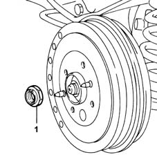
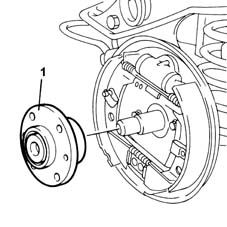

4450D10 hub of one rear wheel, l/h or r/h - r+r with wheel removed
- Path
- Procedures > 44 SUSPENSION AND WHEELS > 4450 WHEELS AND HUBS > 4450D rear wheel hubs > 4450D10 hub of one rear wheel, l/h or r/h - r+r with wheel removed
- Kind
- repair procedure (removal / refitting; the operation number is the code)
- Applies to
- all engines; all production periods
- Interactive page
- https://sloeber94.github.io/elrnDB-fMltpl/en/#/2891753
Applies to: all engines; all production periods
 Removing
Removing
 Refitting
RefittingOperation to be carried out with the vehicle on a lift.
Lift up the handbrake lever.
4450D70 hub cap of one rear wheel, l/h or r/h - r+r .
1. Undo the rear wheel hub nut.

Applies to: all engines; all production periods
Lower the handbrake lever.
Raise the car.
3320B30 lh or rh rear brake drum (one) r r .
1. Remove the rear wheel hub complete with spacer.

Applies to: all engines; all production periods
Applies to: all engines; all production periods
Refitting
RemovingFit the rear hub, complete with spacers, on the stub axle.
3320B30 lh or rh rear brake drum (one) r r .
Lower the vehicle.
Completely raise the handbrake lever.
Tighten the rear wheel hub nut to torque.
 | Fastening | Component | Ø | Value (daNm) |
|---|---|---|---|---|
- | Nut | REAR WHEEL HUB WITH BEARINGS | M22 x 1.5 | 28 |
Lower the handbrake lever.